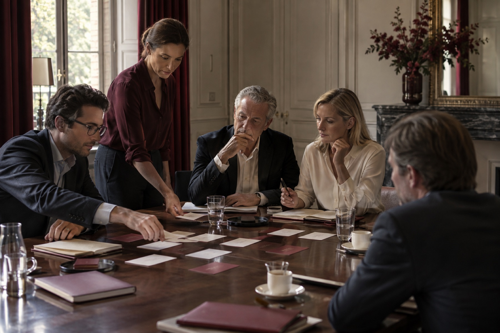

Veränderung gesund gestalten.
Gemeinsam ins Handeln kommen. Wir begleiten Unternehmen, Führungskräfte und Teams dabei, Orientierung zu gewinnen, Zusammenarbeit zu stärken und Veränderungen umzusetzen.
Damit aus Veränderung Fortschritt wird.
Manchmal braucht es ein klärendes Gespräch. Manchmal ein Team mit unterschiedlichen Fachkompetenzen.
GesundeUnternehmen verbindet die Erfahrung von Claudia Effertz mit spezialisierten Partnern. Sie können persönliche Begleitung, einzelne Leistungen oder ein eigenständiges Beratungs- und Umsetzungsprojekt anfragen.
Das Netzwerk kennenlernen ↗Wobei wir Sie unterstützen
Wir beginnen bei Ihrer konkreten Situation und entwickeln daraus einen Auftrag, der zu Ihren Menschen und Möglichkeiten passt.
Orientierung geben
Führung, Selbstführung und Verantwortung in Bewegung bringen.
Mehr erfahren ↗Verbindung schaffen
Rollen klären, Spannungen bearbeiten und Teams stärken.
Mehr erfahren ↗Ideen verwirklichen
Beratungsprojekte entwickeln und wirksam begleiten.
Mehr erfahren ↗„Wir verbinden Menschen, Perspektiven und Kompetenzen – und machen gemeinsam den nächsten Schritt möglich.“
Sie wissen von Beginn an, wer Ihre Ansprechperson ist, welche Fachkompetenzen eingebunden werden und wer die jeweiligen Beiträge verantwortet. Wir arbeiten aufmerksam, klar und nah an Ihrem Alltag.
Über unsere Arbeit ↗Von der Klärung bis zur Verankerung.
Ein guter Prozess lässt Raum für die Wirklichkeit einer Organisation. Unsere Schritte geben Orientierung, ohne ein starres Programm vorzugeben.
Verstehen
Anliegen, Zusammenhänge und Ressourcen klären.
Verbinden
Menschen und Fachkompetenzen zusammenbringen.
Entwickeln
Tragfähige Konzepte und nächste Schritte gestalten.
Befähigen
Kompetenz und Verantwortung stärken.
Umsetzen
Vereinbarungen in konkrete Schritte übersetzen.
Verankern
Erfahrungen auswerten und im Alltag sichern.

Claudia Effertz
Führung, Coaching und Veränderung mit Blick auf Menschen und Strukturen.
Claudia begleitet Menschen, Teams und Organisationen in anspruchsvollen Übergängen. Ihre Leistungen bleiben direkt über GesundeUnternehmen anfragbar und können durch die Kompetenzen des Netzwerks ergänzt werden.
Claudias Leistungen ↗Expertise, die zusammenfindet.
Die passenden Fachpersonen für das Anliegen – einzeln oder als Projektteam.
Die bestehenden Partnerprofile bleiben zugänglich. Das Netzwerk kann Claudias Arbeit ergänzen oder eigenständige Projekte übernehmen. Aufgaben und Verantwortung werden für jedes Vorhaben abgestimmt.
Partner kennenlernen ↗
Ein fester Kontakt für Ihr Vorhaben.
Die Konzeption sieht Marcus Süßenbach für Kundenbetreuung und Projektkoordination vor. Bis die Rolle und direkte Kontaktdaten abgestimmt sind, erreicht Ihre Anfrage das bestehende Büro von GesundeUnternehmen.
Kontakt aufnehmen ↗Wissen wird wertvoll, wenn es in Bewegung kommt.
Was beschäftigt Sie gerade?
Wählen Sie ein Thema. Im persönlichen Gespräch klären wir gemeinsam, welcher Einstieg sinnvoll ist.
Führung und Zusammenarbeit brauchen Orientierung, klare Rollen und Raum für echte Gespräche.
Anliegen besprechen ↗Welche Veränderung möchten Sie gestalten?
Schildern Sie uns kurz Ihr Anliegen. Wir klären mit Ihnen den nächsten sinnvollen Schritt.
Projektanfrage starten ↗